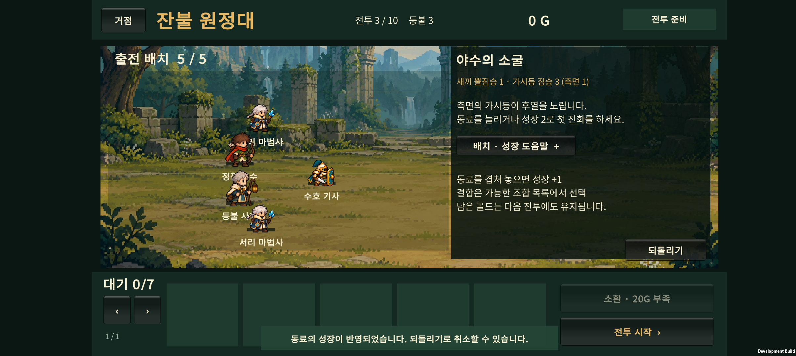
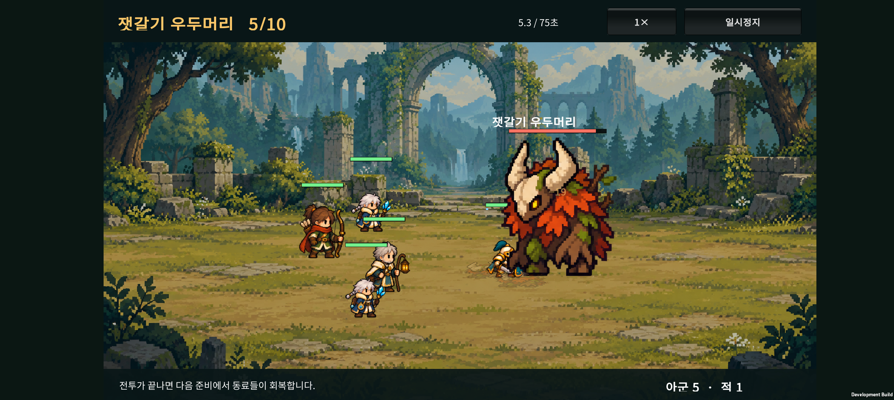
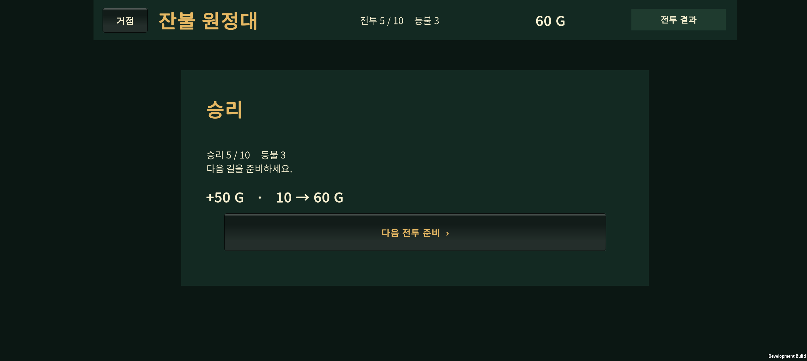

2026-10-23 · 첫 출시 목표는 30전투 · 현재 구현은 10전투
3전투에 측면 원거리 적을 배치하고, 4전투 정예의 압박을 높였다. 첫 보스의 수치는 낮춰 일반 전투에서 성장한 부대로 도전할 수 있도록 연결했다. 시작 인원 3명, 40G, 소환 20G와 기본 직업 6종은 유지했다.
1. 이번 변경
| 구간 | 변경 | 의도 |
|---|---|---|
| 1~2전투 | 전투 수치 유지. 준비 화면에 전열·후열과 적 공격 방식 안내 | 기본 조작을 익히는 쉬운 구간 |
| 3전투 | 근접 2 + 원거리 2 → 근접 1 + 원거리 3. 원거리 한 명이 측면에 배치 | 후열에도 압박이 생기는 첫 전투 |
| 4전투 | 정예와 호위의 공격력 증가. 체력은 유지 | 동료 추가 또는 진화의 효과를 보스 전에 경험 |
| 5전투 | 보스 HP 3200→2500, 공격력 53→46 | 첫 보스에서 발생하던 급격한 난도 상승 완화 |
3전투의 측면 가시등은 준비 화면의 적 구성과 짧은 공략 안내에 표시한다. 4전투 정예의 돌진은 기존에 있던 기능이며, 이번에 새로운 공격 패턴을 추가한 것은 아니다. 보스의 직선 돌진과 체력 절반 이하 광폭화도 유지했다.
세부 수치
| 적 | 체력 | 공격력 | 비고 |
|---|---|---|---|
| 3전투 뿔짐승 ×1 | 150 | 17 | 기존 2마리에서 축소 |
| 3전투 가시등 ×3 | 125 | 19 | 마지막 개체는 좌표 (-0.5, 2.5)에서 시작 |
| 4전투 돌격 뿔짐승 ×1 | 340 | 38 | 기존 돌진 사용 |
| 4전투 일반 뿔짐승 ×2 | 145 | 22 | 정예 호위 |
| 4전투 가시등 ×1 | 100 | 25 | 원거리 압박 |
| 5전투 잿갈기 우두머리 ×1 | 2500 | 46 | 돌진·광폭화 유지, 졸개 2마리 수치 유지 |
6~10전투·승리 골드·성장 비용·흡수와 결합 조작·저장 형식은 이번 조정에서 바뀌지 않았다. 이전 저장을 이어갈 수 있으며, 전투를 새로 시작하거나 중단된 전투를 다시 재생할 때는 변경된 적 구성이 적용된다.
2. 성장 방식별 자동 비교
구현 담당의 조정 시드 140과 별도로, 검증에서는 시드 10011100을 사용했다. 각 정책은 실제 소환·출전·흡수·진화 API로 준비한다. 결과는 사람의 승률이 아니며, 자동 편성의 반복 결과다.
| 정책 | 3전투 승리 | 4전투 승리 | 5전투 승리 | 5전투 평균 시간 |
|---|---|---|---|---|
| 시작 3명 유지, 소환·성장 없음 | 100/100 | 0/100 | 0/100 | 25.37초, 패배 |
| 기본형 5명까지 소환, 성장 없음 | 100/100 | 100/100 | 6/100 | 37.19초 |
| 5명 유지, 기사부터 분기 진화 | 100/100 | 100/100 | 100/100 | 29.41초 |
| 5명 유지, 궁수부터 분기 진화 | 100/100 | 100/100 | 100/100 | 29.41초 |
| 5명 유지, 사제부터 분기 진화 | 100/100 | 100/100 | 100/100 | 31.47초 |
| 시작 3명에 흡수 성장 집중 | 100/100 | 100/100 | 100/100 | 42.07초 |
기존에는 시작 3명이 4전투까지 전원 생존했다. 이번 비교에서는 4전투부터 보강하지 않은 편성과 보강한 편성의 결과가 갈린다. 기본형 5명은 4전투 종료 시 평균 총 체력 73.7%, 기사 우선 성장 편성은 85.5%가 남았다.
‘기사부터’와 ‘궁수부터’는 첫 진화 순서가 다르지만 보스 전에 두 명 모두 진화해 같은 최종 편성으로 수렴한다. 이를 완전히 다른 두 보스 빌드라고 세지 않는다. 사제 우선 편성과 3명 집중 성장 정책에서도 첫 보스 통과를 확인했다. 기본형 5명만으로는 여전히 첫 보스가 어려운 편이다.
패배 후 바꿀 선택지
기본형 5명 정책에서 첫 보스에 진 94개 시드를 실제 패배 처리한 뒤 다시 시험했다. 시작 때 두 명만 소환했으므로 남겨둔 90G를 사용해 4명 소환, 2명 분기 진화를 하고 같은 보스에 재도전했다. 추가 보상이나 임시 자원 없이 94/94회 승리했다. 이는 해당 정책의 남은 자원으로 복구할 수 있다는 확인이며, 모든 잘못된 성장 선택을 복구할 수 있다는 보장은 아니다.
남은 한계
- 시작 3명 고정 정책과 3명 집중 성장 정책은 시드가 달라도 전투 편성이 같으므로, 100개의 서로 다른 팀을 시험한 것이 아니다.
- 각 전투 비교는 패배 후에도 이전 보상을 받았다고 가정해 계속한다. 무패 도달은
reachWins로 구분한다. 별도의 보스 재도전 검사는 실제 패배 경로를 사용했다. - 밀집 배치와 분산 배치의 성장 편성은 모두 보스를 이겼으며 잔여 체력도 비슷했다. 이번 조정으로 배치 우위가 입증되었다고 말할 수 없다.
- 자동 정책은 일부 분기만 사용한다. 모든 직업·분기·특성·결합의 균형을 검증한 결과는 아니다.
- 전투 시간은 시뮬레이션 시간이다. 실제 초보 사용자의 이해도·재도전 의향과 장시간 발열·프레임은 별도 확인 대상이다.
3. 검사와 APK
- 원정 규칙: 1,675 assertions 통과. 3전투 측면 적 배치와 4전투 정예의 기존 돌진 작동 확인 포함.
- 전투 회귀 검사: 111 assertions 통과.
- Unity 입력·JSON 검사: 17 assertions 통과.
- Android APK 빌드 성공, Unity 종료 코드 0. Galaxy Buddy2에 업데이트 설치했다.
- APK:
unity/Builds/Android/expedition-combat-prototype.apk - SHA-256:
D572A24E317B118055E55C7FEA07AF7387744D7BD401490DDE15D10BDA952788
Buddy2 실기기 확인
- 기존 저장을 새로 백업한 뒤, 앱의 새 원정 버튼으로 시작했다. 임시 편성이나 추가 골드를 주입하지 않았다.
- 첫 소환에서 얻은 서리 마법사 2명을 드래그로 출전시켰다. 이후 승리 골드로 동료를 얻고, 드래그 흡수로 기사와 궁수를 각각 분기 진화시켰다.
- 1~5전투를 연속 승리했다. 3전투의 측면 적 구성·진화 안내, 4전투 정예 안내가 준비 화면에서 잘리는 곳 없이 보였다.
- 첫 보스 승리 후 50G 보상, 보유 골드 10→60G를 확인했다. 자동 비교와 별도로 실기기에서 한 번의 자연스러운 원정 진행을 확인한 것이다.
- 해당 앱 프로세스의 런타임 로그에서 Unity 오류·치명적 예외 검색 결과 0건이었다. 장시간 성능·발열을 측정한 검사는 아니다.
- 확인 후 PlayerPrefs 전체를 테스트 직전 백업과 바이트 단위로 비교해 복구하고 홈 화면을 열었다. 사용자의 기존 원정 진행은 보존했다.



./tests/ExpeditionRun/run.ps1
./tests/CatalogCombat/run.ps1
./tests/ExpeditionRun/run-early-balance.ps1
4. 적 디자인 재제작
새 적 스프라이트는 아직 교체하지 않았다. 이번 APK의 적은 임시 아트다. 사용자가 요청한 재디자인은 출시 전 작업으로 명시했다.
숲의 뿔짐승·가시등·돌격 정예·잿갈기 보스부터 제작하고, 성채의 보병·석궁병·석상·골렘으로 이어간다. 같은 지역의 적은 재질·색·모티프를 공유하되, 졸개·정예·보스는 실루엣과 체급으로 구분한다. 적의 기본 시선은 왼쪽이며 아군과 동일한 픽셀 밀도와 바닥 접점을 사용한다.
5. 다음 순서
실제 플레이 피드백으로 15전투를 한 번 더 확인한 뒤, 610전투 균형과 숲 지역 적 아트 시안을 진행한다. 첫 마켓 출시 목표인 30전투는 10→20→30 순서로 확장한다. 100전투·무한 모드는 출시 후 후보로 둔다.